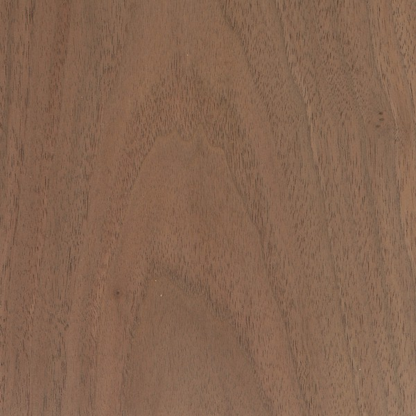

|
|

|
Materials Used in Ornamental Turning
Walnut |
|

Black Walnut
 Walnut & Ash
Walnut & Ash
Ornamentally Turned Objects This is an acceptable wood for ornamental turning. But it is the color, and the relative plain-ness of the wood which is the draw. I have also found it is good for objects that will be handled often. One example is the pepper mill shown to the left. Prototyping This is a really good wood for prototyping, and that is what I use it for most often. As a wood that holds shape and doesn't tear out when you get to the edge, it offers a very low cost solution to ensure your shape is what you want, and the approach you want to use works. Also, you can get cutoffs/discarded pieces from other woodworkers often for free. Ornamental Turning Notes Working the wood is easy, but requires some pre-planning. End grain work will easily "burn", so you will need to decrease the contact time with the cutter. This can be achieved by slowing the cutter speed (i.e., slowing down the overhead drive), or by increasing the spindle drive speed (I typically run this 40-50% faster), or both. Different cutter shapes may be helpful. I have found that a fly cutter with a much more rounded edge (rather like a spoon) leaves a better finish. Pointed cutters leave some "fuzz" on the cut. Finishing Finishing this may be necessary to bring out the cuts. I use oil-based finishes. Other More information is in The Wood Database. |